home
Welcome to Heritage Hats - The Largest Hat Store in Arizona Heritage Hats provide quality custom made and brand name hats with a variety of style for customers in the Phoenix-Scottsdale-Cave Creek Arizona areas and nationwide. Our customers include local residents, both full and part-time along with our tourist visitors. We have a large selection of westerns, fedoras, Panama's, Australians and a variety of caps and other hats including the Kangol, pork pie, derby, and top hats. We also carry a large variety of flat style caps. We know that a hat is an expression of your unique personality and style and we hope you find our website a helpful guide while searching for that perfect hat. We also have a large selection of hat bands and other accessories to provide even more individual choices.
shop
- australian hats
- felt fedora hats 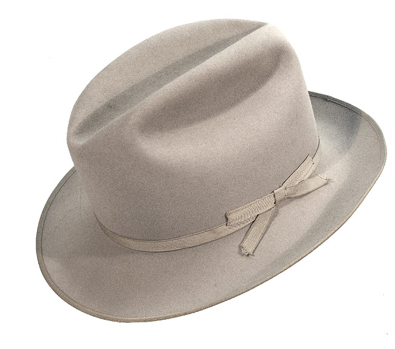
- straw fedora hats
- caps 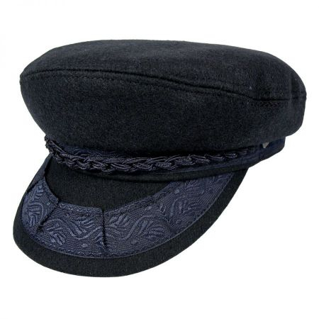 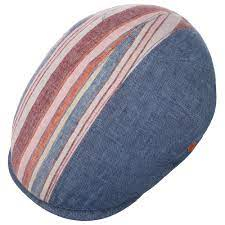 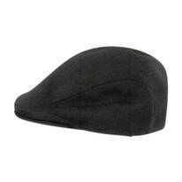
- panama hats 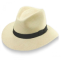 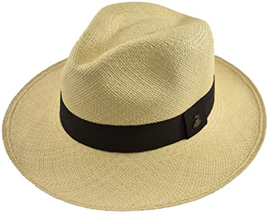 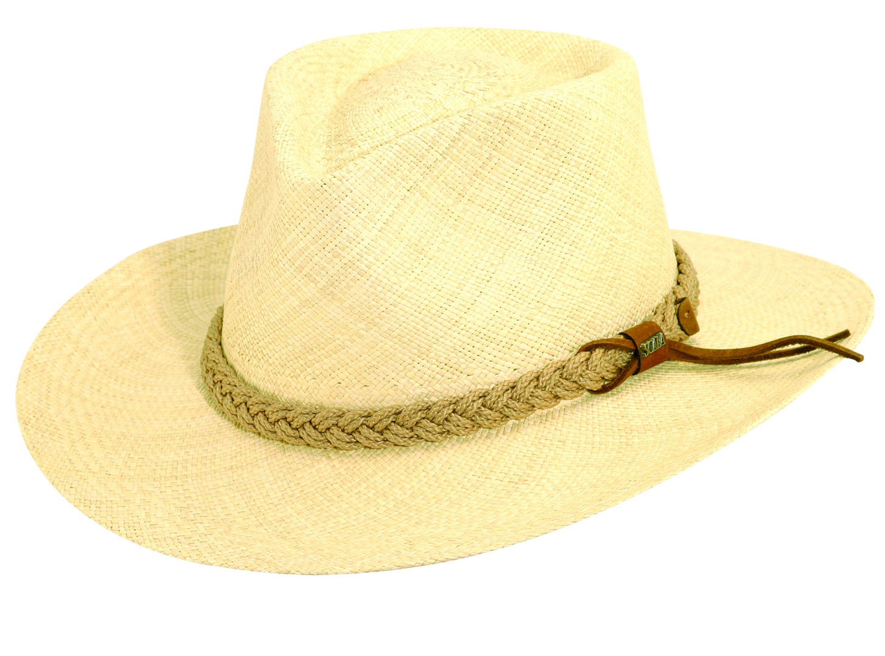
- western felt hats 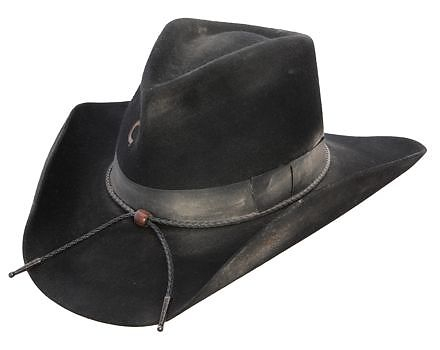 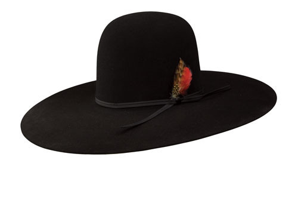
- western straw hats
 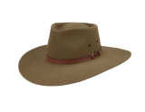
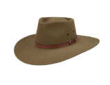 
Australian hats are built to endure many different weather climates. These hats are popular because they are durable, weather-resistant and provide protection in rugged weather conditions, including the Arizona desert. They are popular among hikers and provide the necessary sun protection against the intense valley sun. Heritage Hats carries a wide selection of Aussie, outback, and bush hats including Akruba, Henschel Breezer, Outback Trading Company and Head 'n Home. We also carry Bigalli, Scala, and Brixton outdoor hats that are durable, weather-resistant, and crushable.
 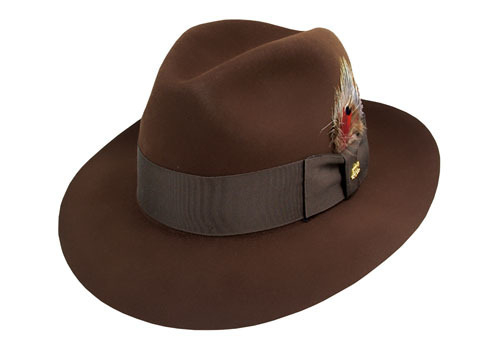
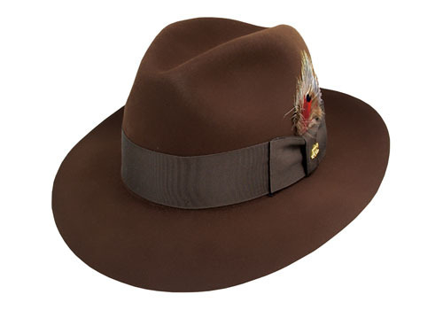
The Fedora hat is a fashion accessory with a lot of character. Its introduction was made famous in the 1882 French play named Fedora and began as a female fashion accessory for middle and upper-class women. Fedoras quickly transitioned to a fashion and functional accessory in the early 20th century for men. In the 1920s and 1930s during the prohibition era, the Fedora became a staple for the gangsters like Al Capone and the detective who chased him. This stylish piece of headwear continued its popularity in the 1040s and the 1950s by the entertainment industry and that trend continues today. From Frank Sinatra and Humphry Boart to Justin Timberlake the fedora style of hat continues to be a fashion icon. It's also making a comeback as a women's fashion accessory.
 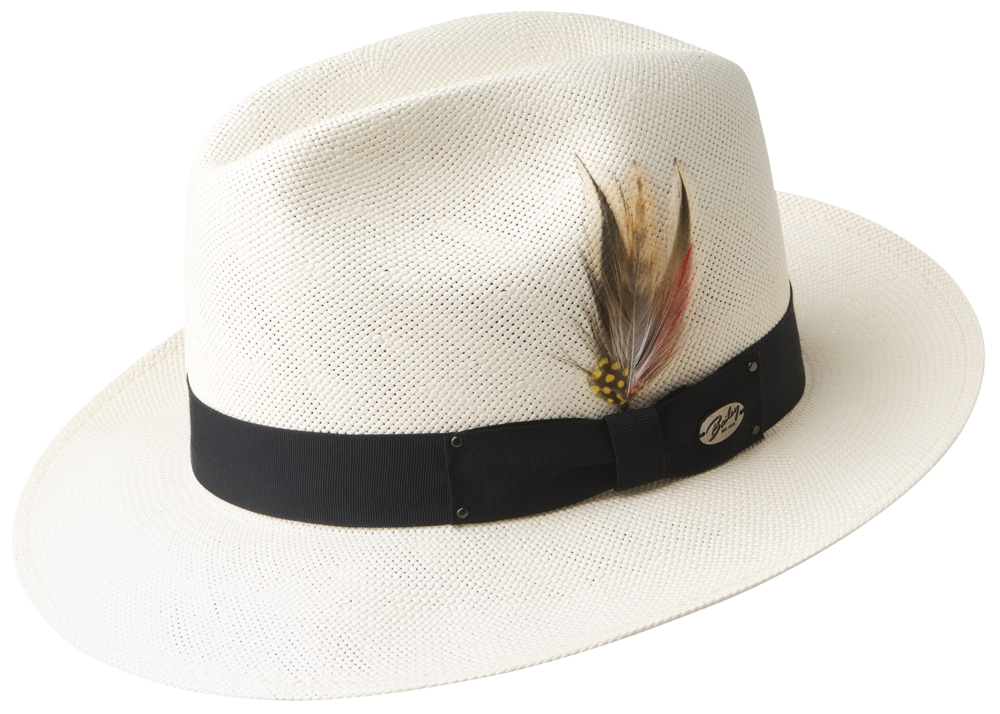 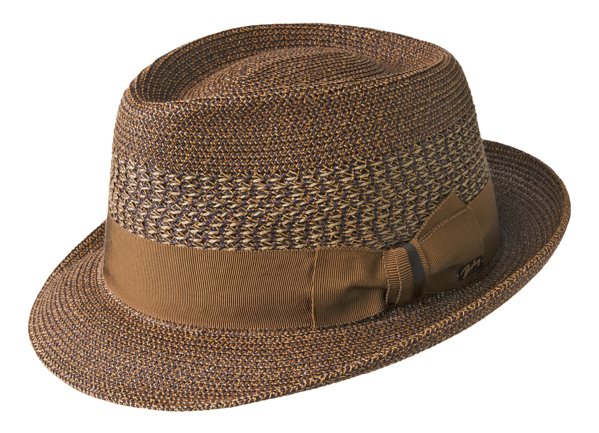
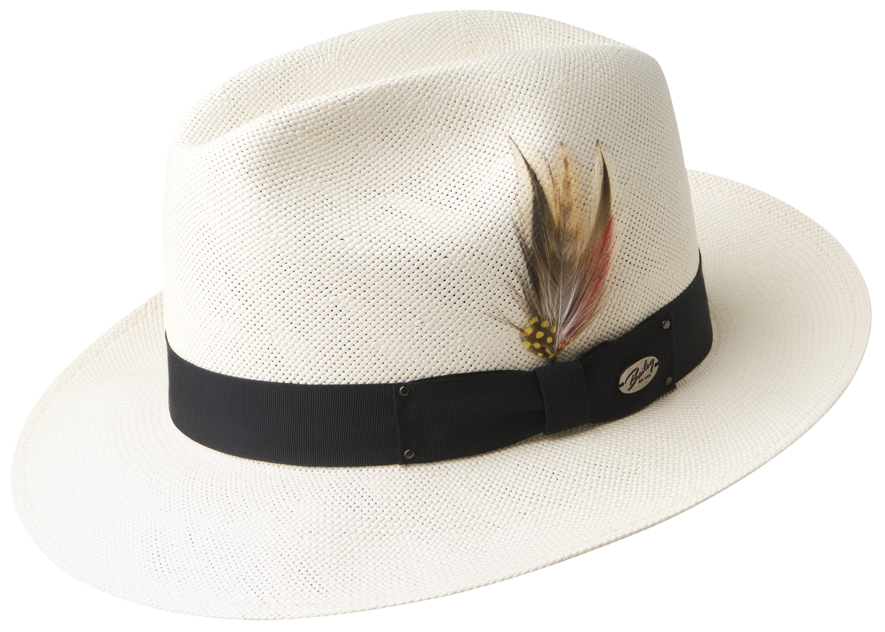 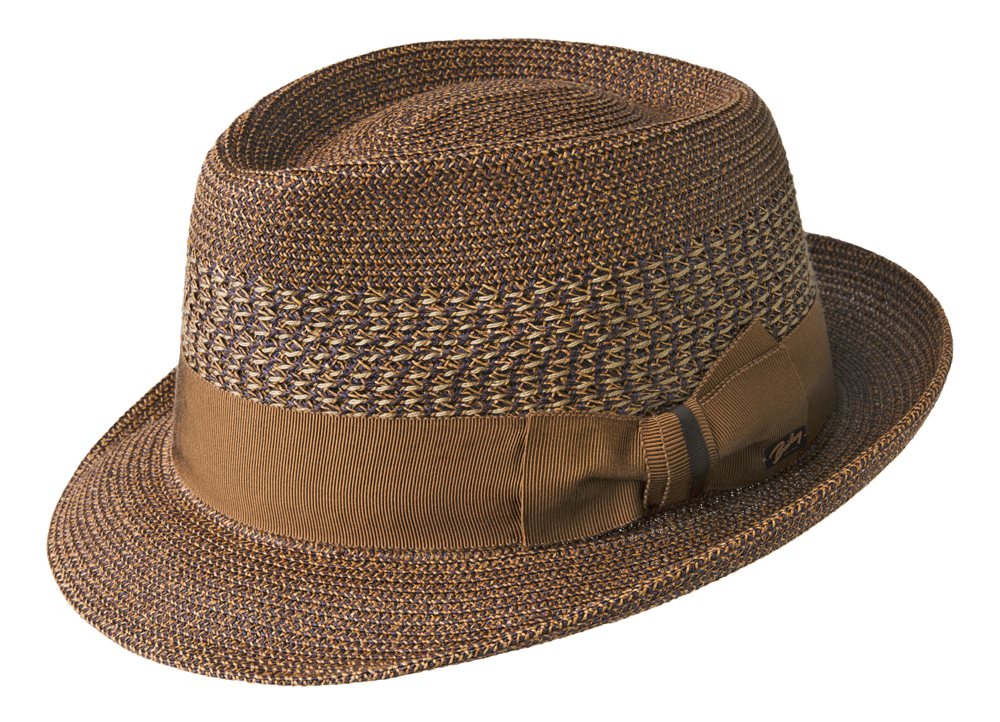
** see felt fedora remarks **
We carry a variety of cap styles to help you choose the right one for your personal lifestyle and enhance any hat enthusiast's hat collection. Our selection includes flat caps including Newsboy, Kangol, Baker, Fiddler, Fisherman and Cadets. You'll find such styles as the Houligan, Ivy, and duckbill among others.
Panama hats are extremely popular as a mainstay fashion accessory item, but the history and tradition of this hat is equally important. A Panama hat is a traditional brimmed straw hat of Ecuadorian origin. They are built by Ecuadorian villagers but is named the Panama instead of their Ecuadorian origin because in the mid 1800's Panama was a much busier place in the world and became the marketplace to buy these light colored, lightweight hats that offer much needed protection from the sun in Central and South America and in the southwest portions of the United States. The art of weaving the traditional Ecuadorian toquilla hat was added to the UNESCO Intangible Cultural Heritage list on December 6th, 2012.

There are few items in American history that carry such an iconic weight as the western cowboy hat. This style of hat receives immediate recognition around the world and there is still something about the hat that continues to remind us of the tales of the wild, wild west. The western hat as we know it was created by John B. Stetson in 1865 and the design and construction of the hat remains unchanged today. After the turn of the 20th century, the western hat became the hat of choice for the working class of the American west and is still worn today by cowboys, ranchers and western enthusiasts around the world.


There are few items in American history that carry such an iconic weight as the western cowboy hat. Our western straws offer you the western style, some with vented crowns to provide you with the sun protection you need and the western style you love. We offer a large selection of Stetson, Bailey, Resistol, American and Atwood.
about
The name Heritage Hats was born because I wanted a name that would express my passion to learn and carry on a skill and tradition about the way of life and the traditional culture of the southwest. I moved to Phoenix from Rockford, Illinois in 1981 and became infatuated with the western lifestyle, particularly the life of the cowboy. I befriended two older gentlemen who taught me the techniques and skills of cleaning and blocking western hats for cowboys. Steve Speros who owned Phoenix Exclusive Hatters and George Falkedes who owned Athens Hats became my mentors and taught me how to skillfully master the techniques and skills necessary to become a restoration expert. I am proud to have inherited their original cleaning and blocking equipment from 1912. As I continued to perfect my techniques and skills, I started selling western hats from my pickup truck on the weekends at rodeos and I opened my first retail store in 1983. Today, Heritage Hats is the largest hat store in Arizona with a large variety of hats including; western felt and straws, fedora felt and straws, panamas, Australians and other popular hats and caps. Our retail space covers 3200 square feet with 2 showrooms. Our restoration workshop is in the back of the store where I continue to do cleaning and blocking on the premises. We also custom make hats; some of our most famous customers include Ronald Reagan and George Burns. Rich Glisson (Owner)